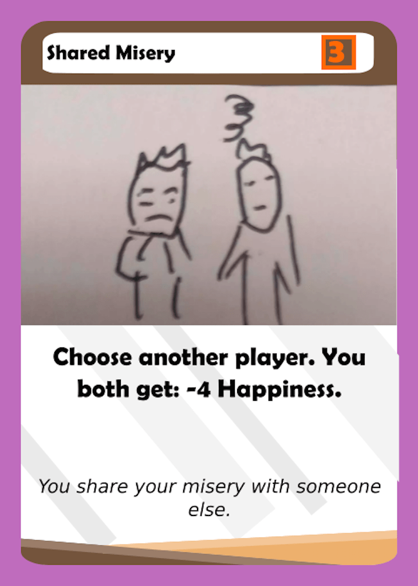
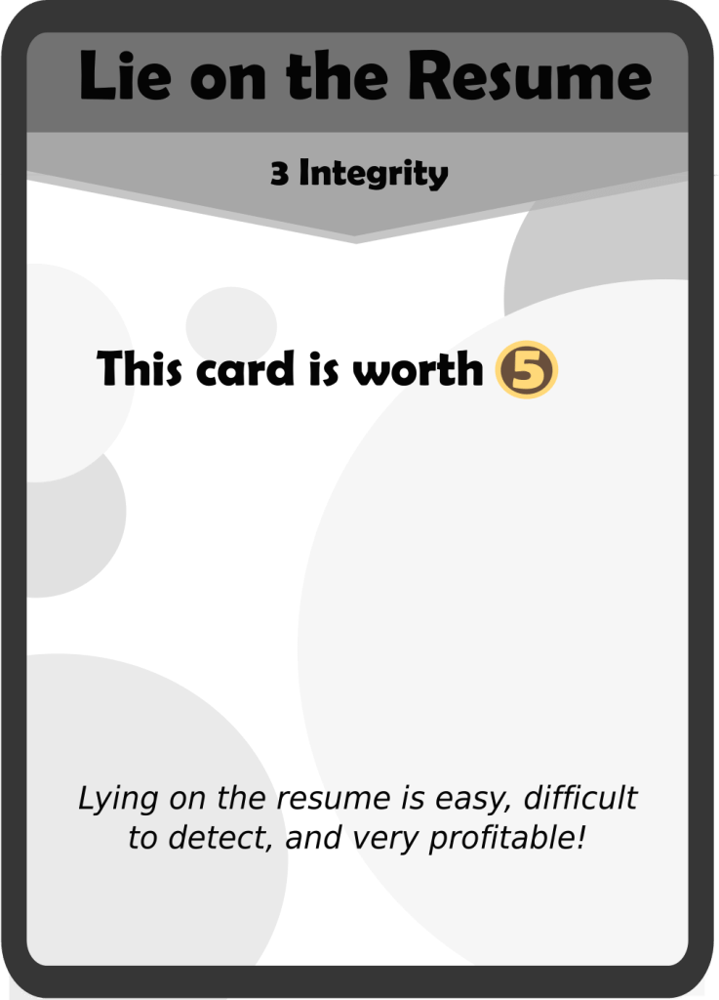

Hey everyone! I’ve missed a few posts so I wanted to make it up with a mega-post. I’ve been doing a bunch of play tests recently, and here are a couple photos:
The game is in a good place, and I think that it is pretty balanced. With that in mind, I’ve been making a few changes to adjust the “feel” of the game. One thing that I’ve been noticing is that Stress and Happiness are often not huge issues Junior and Senior year. The fact that the Junior science class and english class give Fizzix and Knovel influence respectively makes managing Happiness and Stress very easy. This, combined with the fact that there were few Junior and Senior events that can directly affect Stress are in contrast to Freshman and Sophomore year where managing stress and happiness is a much larger task.
The last card to still have the discard mechanic, I decided to change You Can Only Have Two to be less thematic and more practical. Discarding a card is almost always terrible, and I didn’t like the fact that there had to be separate rules on what would happen when you had to discard a card when you don’t have any cards in hand.

I wasn’t happy with the effect of Prank Someone because it always felt mediocre. Very rarely can you use this to break someone down, and the Happiness gain is actually good for your opponent. Now that breakdown is less crippling due to the player gaining breakdown being able to control when they discard a card, I feel that Prank Someone is now fairly decent without it breaking the game. +5 Stress is a lot, more than any other attacking card currently. While making it +5 was a big decision, I do not think it breaks the balance of Junior year because it’s actually just one of three ways to increase your opponent’s stress through an event card Junior year. And before these changes, it used to be the only way. This card is likely going to have a larger effect Sophomore year by forcing players to not be able to get off scott-free by having high stress coming into Junior year, and thus result in more conservative Sophomore year plays.
It’s important to note that this card was actually 4 action points and -2 Happiness, and the card is now significantly nerfed. I had a very interesting piece of feedback recently, which was that there weren’t any terrible cards in the Junior deck. Freshman year has Crappy Physics Group, Sophomore year has TOP Chem Chapter Tests and Scarlet Letter. Senior year has Steal Essay. But literally every card in the Junior deck is a great card. That makes Graff a lot worse of a teacher since you can’t strategically dump a bad card on someone else. It also makes it a little bit boring- a little bit more diversity adds some more swings to the game. Plus, this card lets you hurt someone else too, which is actually not bad at all if there is a leader. I added the stress effect because of what I was saying earlier as well: people just aren’t stressed out enough Junior year.
This is a good example of how play testing can catch errors. The problem with this card is that you can play it as your last turn, and then you don’t have a next turn… until Senior Year. That’s just weird. Note that this change was not made to “Last Minute FUN Prep”, which is the Senior Year event card equivalent.
MOAR STRESS!!!

I keep buffing this card. I made it only lose 1 Integrity and then have it so that you take an Essay after your opponents take one. And it is STILL terrible! The issue is that the card was absolutely broken in an older iteration of the game where whoever drew this card would basically win the game if they stole Magnum Opus, which was worth 10 RP at the time. That’s what makes me hesitant to buff this card too much, but I now think that it has reached the point where it needed to be a little bit less wordy. I think it is a lot better now, and a lot less complicated too.
I made this change from David’s suggestion from his comment in my last post about Influence Cards here: More Influence Card Changes. Your comments are very helpful so make sure to leave a comment below! Anyway, after play testing this many times it became clear that the card was just not very fun, and too complicated to use. It was never taken through Terry’s ability in the early because there is usually a better investment card to take, and this card results in a lot of inflexibility. This card was also never taken in the late game because by then most players have low Integrity, and the card never really is drawn so even players with high Integrity would most likely have to go digging through the Influence deck for it. I think this card is actually fine in it’s current form. Sure, it is a free 2 RP, but you either had to use Terry’s ability to dig it out and then not choose the other cards, or draw it from an event card. Then, you have to reduce your flexibility by taking a hit to Integrity that could be spent somewhere else.
This card just had too strong of an Immediate effect. Basically, with a +6 Friend Immediate Effect, this club was free and then gave a Friend back on top of that. In addition, it gives you 6 Happiness, which is really amazing. I feel like this club is more balanced now and is less of a combo enabler that lets you do whatever you want.
Note that this card was 6 Action Points, not 5. I really like this card and the idea behind it: a card with no effect but a really high Action Point value (the highest in the game, in fact). However, it was really just way too strong. Compared to cards like Concussion, a really solid card at 5 Action Points that makes you lose all your Stats, Godspeed was busted beyond belief. I think it probably was the best card in the game, and is still a really strong card. But now it is pretty restricted to basically just using the basic actions. This hurts more than what meets the eye: it means you can’t pull off crazy combos with Mathew, Terry, or Yasse. It also means that you can’t go grab a lot of clubs: you have to wait a turn for the other players to catch up first. Maybe they will take the clubs you were going for before you can! We’ll see how effective this nerf is through play testing, but I think it will be more of a decision to play this card because there are some situations where you just really need to be able to use teacher abilities or buy some clubs.
The effect was already changed to 3 Action Points and a positive value. In fact, this isn’t really a balance change, but a typo correction. Apparently, Plagiarized is spelled with an “ia” instead of an “e”. That makes no sense! It should be an e in my opinion. But whatever. I also think it is funny that out of all cards to spell wrong, it is the plagiarized essay. Ha ha ha.
In other news, the rulebook is finally updated! Please take a look and give me feedback: Official Daggers High Rules.
Thanks for reading! Let me know what you think in the comments. Also, make sure to subscribe if you have not already done so. See you next time!